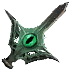

Драконий Взгляд
Предметы / С заданий
Открыть в интерактивной вики →
| Вес | 1 |
|---|---|
| Цена | 0 |
Описание
Необходим для получения Глаза Дракона.
Требуются 3х для получения Драконий глаз.
Драконий глаз.
Требуются 3х для получения
Драконий глаз.| Нужны для получения Драконьего Ока. |
Дроп
Применение
|
Способы получения
|